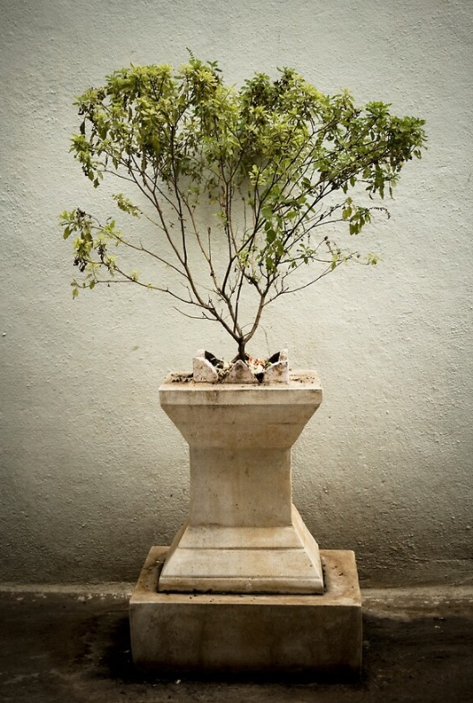

Мангала Арати
Шри Шри Гурваштака
Примеры: Прабхупада 1, Прабхупада 2, Кадамба, Krishna
1
Самсāра-дāвāнала-лӣдха-лока
Трāнāйа кāрунйа-гханāгхана-твам
Прāптасйа калйāна-гунāрнавасйа
Ванде гурох шри чаранāравиндам
Самсāра-дāвāнала-лӣдха-лока
Трāнāйа кāрунйа-гханā-гханатвам
Прāптасйа калйāна-гунāрнавасйа
Ванде гурох шрӣ чаранāравиндам
Духовный учитель получает благословение из океана милости. Подобно тому как облако, проливающее дождь, гасит лесной пожар, духовный учитель гасит пылающий огонь материального существования и спасает людей, охваченных этим пламенем. Такой духовный учитель — океан благих качеств, и я в глубоком почтении склоняюсь к его лотосным стопам.
2
Махāпрабхох киртана-нритйа-гита
Вāдитра-мāдйан-манасо расена
Ромāнча-кампāшру-таранга-бхāджо
Ванде гурох шрӣ чаранāравиндам
Движение санкиртаны Господа Чайтаньи Махапрабху — источник непреходящей радости для духовного учителя, который порой повторяет святое имя, порой танцует, охваченный экстазом, а порой поет и играет на музыкальных инструментах. Его ум наслаждается нектаром чистой преданности, и потому волосы на его теле временами встают дыбом, по телу пробегает дрожь, а слезы ручьями льются из глаз. В глубоком почтении я склоняюсь к лотосным стопам такого духовного учителя.
3
Шрӣ-виграхāрāдхана-нитйа-нāнā
Шрингāра-тан-мандира-мāрджанāдау
Йуктасйа бхактāмш ча нийунджато пи
Ванде гурох шрӣ чаранāравиндам
Всегда занятый поклонением Шри Шри Радхе и Кришне в храме, духовный учитель вовлекает в него также своих учеников. Они облачают Божества в прекрасные одежды, надевают на Них украшения, моют Их храм и занимаются другими видами служения, поклоняясь таким образом Господу. В глубоком почтении я склоняюсь к лотосным стопам такого духовного учителя.
4
Чатур-видха-шрӣ-бхагават-прасāда
Свāдв-анна-триптāн хари-бхакта-сангхāн
Критвайва триптим бхаджатах садаива
Ванде гурох шрӣ чаранāравиндам
Духовный учитель предлагает Кришне чудесную пищу четырех видов. И когда духовный учитель видит, что преданные, вкусив бхагават-прасада, полностью удовлетворены, он испытывает радость. В глубоком почтении я склоняюсь к лотосным стопам такого духовного учителя.
5
Шрӣ-рāдхика-мāдхавайор апāра
Мāдхурйа-лилā-гуна-рупа-нāмнāм
Прати-кшанāсвāдана-лолупасйа
Ванде гурох шрӣ чаранāравиндам
Духовный учитель всегда жаждет слушать повествования о бесчисленных любовных играх Радхики и Мадхавы, Их имена и описания Их качеств и форм и всегда готов воспевать Их. Духовный учитель жаждет наслаждаться этим непрестанно, и потому я в глубоком почтении склоняюсь к лотосным стопам такого духовного учителя.
6
Никунджа-йуно рати-кели-сиддхйаи
Йā йāлибхир йуктир апекшанийā
Татрāти-дāкшйāд ати-валлабхасйа
Ванде гурох шрӣ чаранāравиндам
Духовный учитель очень дорог Господу Кришне, ибо он очень умело помогает гопи, которые, проявляя необыкновенное искусство, делают в рощах Вриндаваны различные приготовления, чтобы довести любовные игры Радхи и Кришны до совершенства. В глубочайшем смирении я склоняюсь к лотосным стопам такого духовного учителя.
7
Сакшāд-дхаритвена самаста-шāстраир
Уктас татхā бхāвйата эва садбхих
Кинту прабхор йах прийа эва тасйа
Ванде гурох шрӣ чаранāравиндам
Духовному учителю следует оказывать то же почтение, что и Верховному Господу, ибо он — Его ближайший слуга. Так гласят все богооткровенные писания, и этому указанию следуют все авторитеты. Духовный учитель — истинный представитель Шри Хари (Кришны), и я в глубоком почтении склоняюсь к его лотосным стопам.
8
Йасйа прасāдāд бхагавад-прасāдо
Йасйāпрасāдāн на гатих кутóпи
Дхйāйан стувамс тасйа йашас три-сандхйам
Ванде гурох шрӣ чаранāравиндам
Благословение Кришны можно обрести лишь по милости духовного учителя. Без его милости любые попытки достичь совершенства обречены на провал. Поэтому я должен всегда помнить о своем духовном учителе и прославлять его. Не меньше трех раз в день должен я склоняться в глубоком почтении к лотосным стопам своего духовного учителя.
Шрила Прабхупада пранати
(пранама-мантра)
1

Нама Ом Вишну-паāдāйа
Кршна-прештхāйа бхӯ-тале
Шрӣмате бхактиведāнта-
Свāмин ити нāмине
В глубоком почтении я склоняюсь перед Его Божественной Милостью А. Ч. Бхактиведантой Свами Прабхупадой, который очень дорог Господу Кришне, ибо для него нет иного прибежища, кроме лотосных стоп Господа.
2
Намас те сāрасвате деве
Гаура-вāнӣ-прачāрине
Нирвишеша-шӯнйавāди
Пāшчāтйа-деша-тāрине
О духовный учитель, слуга Сарасвати Госвами, мы склоняемся перед тобой в глубоком почтении. Ты милостиво проповедуешь учение Господа Чайтаньядевы и несешь освобождение странам Запада, в котором широко распространился имперсонализм и философия пустоты.
Панча-Таттва маха-мантра

(джайа) Шрӣ-Кришна-Чаитанйа
Прабху Нитйāнанда
Шрӣ-Адваита Гадāдхара
Шрӣвāсāди Гаура-бхакта-вринда
Я выражаю свое глубокое почтение Шри Кришне Чайтанье, Прабху Нитьянанде, Шри Адвайте, Гададхаре, Шривасе и всем остальным, следующим путем преданного служения.
Харе Кришна маха-мантра

Харе Кришна Харе Кришна
Кришна Кришна Харе Харе
Харе Рама Харе Рама
Рама Рама Харе Харе
О всепривлекающий, о всерадующий Господь, о, энергия Господа, прошу, позволь мне преданно служить Тебе!
Молитва према-дхвани
1

Джайа Ом Вишну-пада парамахамса
Паривраджакачарйа аштоттара-шата
Шрӣ Шрӣмад Абхайа-Чаранаравинда
Бхактиведанта Свами Махараджа Прабхупада
— кӣ джайа!
Вся слава ачарье Ом Вишну-пада 108 Триданди Госвами Абхаю Чаранаравинде Бхактиведанте Свами Прабхупаде, который находится на высочайшей ступени санньясы. ачарйа-основатель ИСККОН шрила прабхупада — кӣ джайа! Вся слава Шриле Прабхупаде, ачарье-основателю.
2

Джайа Ом Вишну-пада парамахамса
Паривраджакачарйа аштоттара-шата
Шрӣ Шрӣмад Бхактисиддханта Сарасвати
Госвами Махараджа Прабхупада
— кӣ джайа!
Вся слава ачарье Ом Вишну-пада 108 Триданди Госвами Бхактисиддханте Сарасвати Прабхупаде, который путешествует по всей земле, проповедуя славу Хари, и который находится на высочайшей ступени санньясы.
3

Джайа Ом Вишну-пада Шрӣла Гауракшиора
даса Бабаджи Махараджа
— кӣ джайа!
Вся слава Шриле Гауракишору дасу Бабаджи.
4

Джайа Ом Вишну-пада шрӣла Саччидананда
Бхактивинода Тхакура
— кӣ джайа!
Вся слава Шриле Сач-чид-ананде Бхактивиноду Тхакуру.
5

Джайа Ом Вишну-пада вайшнава-сāрвабхаума
Шрӣла Джаганнāтха дāс Бāбāджӣ Махāрāджа
— кӣ джайа!
Вся слава Вайшнава Сарвабхаума Шриле Джаганнатхе дасу Бабаджи.
6

Джайа Шрӣ Рӯпа, Санāтана, Бхатта Рагхунāтха,
Шрӣ Джӣва, Гопāла Бхатта, Дāса Рагхунāтха
Шад-Госвāмӣ Прабху
— кӣ джайа!
Вся слава шести Госвами: Шри Рупе, Санатане, Рагхунатха Бхатте, Дживе, Гопала Бхатте и Рагхунатха дасу.
7

Нāмāчāрйа Шрӣла Харидāса Тхāкура
— кӣ джайа!
Вся слава нама-ачарье, Шриле Харидасу Тхакуру.
8

Премсе кахо Шрӣ-Кришна-Чаитанйа
Прабху Нитйананда Шрӣ Адваита Гададхара
Шрӣвасади Гаура-бхакта-вринда
— кӣ джайа!
Взывайте с любовью к именам Шри Кришны Чайтаньи, Прабху Нитьянанды, Шри Адвайты, Шри Гададхары, Шривасы и ко всем преданным Господа Чайтаньи.
9

Шрӣ Шрӣ Радха-Кршна, Гопа-Гопинатха,
Шйама Кунда, Радха-Кунда, Гири-Говардхана
— кӣ джайа!
Вся слава Радха-Кришне, пастушкáм и пастýшкам, коровам, Шьямакунде, Радха-Кунде и холму Говардхану.
10

Шрӣ Майапур дхама — кӣ джайа!
Шрӣ Вриндавана дхама — кӣ джайа!
Пурушоттама Кшетра Джаганнатх Пури дхама — кӣ джайа!
Ганга-майи — кӣ джайа!
Ямуна-майи — кӣ джайа!
Бхакти-девй — кӣ джайа!
Туласй-девй — кӣ джайа!
Ананта коти вайшнава-вринда — кӣ джайа!
Шрӣ Хари-нама санкӣртана — кӣ джайа!
Грантха-раджа Шрӣмад-Бхагаватам — кӣ джайа!
Вся слава Шри Майяпур-дхаме. Вся слава Шри Вриндавана-дхаме. Вся слава Шри Джаганнатх Пури-дхаме. Вся слава Ганга-деви. Вся слава Ямуна-деви. Вся слава Бхакти-деви. Вся слава Туласи-деви. Вся слава бесчисленным вайшнавам. Вся слава совместному воспеванию святого имени. Вся слава царю книг, «Шримад-Бхагаватам».
11
ИСККОН-вартмана-гуру-вринда — кӣ джайа!
Самавета бхакта-вринда — кӣ джайа!
Гаура-премананда хари-харибол!
Вся слава гуру ИСККОН. Вся слава собравшимся преданным. Воспевайте имена Хари! Хари! в экстазе чайтанья-премы.
12
Вся слава собравшимся преданным
— Харе Кришна (3 раза)
Вся слава Шрӣ Шрӣ Гуру и Шрӣ Гауранге
«Джайа Шрӣ Шрӣ-Гуру-Гауранга» (3 раза)
Вся слава Шрӣле Прабхупаде!
Шри Нрсимха Пранама

Намас те Нарасимхāйа
Прахлāдāхлāда-дāйине
Хиранйакашипор вакшах-
Шилā-танка-накхāлайе
Я склоняюсь перед Господом Нарасимхой, который приносит радость Прахладе Махарадже и чьи ногти вонзаются, словно резцы, в каменную грудь демона Хираньякашипу.
2
Ито Нрисимхах парато Нрисимхо
Йато йато йāми тато Нрисимхах
Бахир Нрисимхо хридайе Нрисимхо
Нрисимхам āдим шаранам прападйе
Господь Нрисимха и здесь и там. Куда бы я ни пошел — везде Господь Нрисимха. Он и в сердце, и вовне. Я предаюсь Господу Нрисимхе, источнику всего сущего и высшему прибежищу для всех.
3
Тава кара-камала-варе накхам адбхута-шрингам
Далита-Хиранйакашипу-тану-бхрингам
Кешава дхрита-нарахари-рӯпа
Джайа джагадӣша Харе
Джайа джагадӣша Харе
Джайа джагадӣша Харе
О Кешава! О Владыка вселенной! О Господь Хари, принявший образ человекольва! Слава Тебе! С такой же легкостью, с какой человек может раздавить пальцами осу, Ты Своими чудесными острыми когтями разорвал на части тело демона Хираньякашипу, схожего с осой.
Джайа Нрсимхадев
Джайа Лакшмӣ Нрсимха
Джайа Прахлāд Махарāдж
Джайа Прабхупāда
Шри Туласи Киртан
Примеры: ISKCON Bangalore

Вриндайаи Туласи-девйаи
Прийайаи Кешавасйа ча
Вишну-бхакти-праде деви
Сатйаватйаи намо намах
Вновь и вновь склоняюсь я перед Вриндой, Шримати Туласи Деви, которая очень дорога Господу Кешаве. О богиня, ты, знающая высочайшую истину, даруешь всем преданное служение Господу Кришне.
1
Намо намах Туласи Кришна-прейаси
Радха-Кришна-сева пабо эи абхилаши
О Туласи, возлюбленная Кришны, я вновь и вновь склоняюсь пред тобой. Я желаю обрести служение Шри Шри Радхе и Кришне.
2
Дже томара шарана лой, тара ванчха пурна хой
Крипа кори коро таре Бриндавана-баси
Ты исполняешь все желания того, кто избрал тебя своим прибежищем. Проливая на него свою милость, ты делаешь его жителем Вриндаваны.
3
Мор эи абхилаш, билас кундже дио вас
Найане херибо сада джугала-рупа-раши
Позволь же и мне поселиться в рощах наслаждения Вриндавана-дхамы, и тогда я смогу постоянно созерцать прекрасные игры Радхи и Кришны.
4
Эи ниведана дхаро, сакхир анугата коро
Сева-адхикара дийе коро ниджа даси
Молю тебя: сделай меня последователем пастушек Враджа. Даруй мне привилегию преданно служить Господу и сделай меня своей служанкой.
5
Дина кршна-дасе кой, эи джена мора хой
Шрӣ-Радха-Говинда-преме сада джена бхаси
Я, падший, недостойный слуга Кришны молю даровать мне возможность вечно плавать в океане любви Шри Радхи и Говинды.

Йани кани ча папани
Брахма-хатйадикани ча
Тани тани пранашйанти
Прадакшинах паде паде
Обходя вокруг Туласи-деви, человек с каждым шагом избавляется от всех грехов, какие только можно совершить, — даже от такого греха, как убийство брахмана.
Шри Шри Шикшаштака
Наставления Шри Чайтаньи Махапрабху
1
Чето-дарпана-марджанам бхава-махадавагни-нирвапанам
Шрейах-каирава-чандрика-витаранам видйа-вадху-дживанам
Анандамбудхи-вардханам прати-падам пурнамритасваданам
Сарватма-снапанам парам виджайате Шрӣ-Кришна-санкиртанам
Слава Шри-Кришна-санкиртане, очищающей сердце от грязи, скопившейся в нем за долгие годы, и гасящей пожар обусловленного существования и повторяющихся рождений и смертей. Это движение санкиртаны несет величайшее благословение человечеству, ибо излучает сияние, подобное благодатному сиянию луны. Оно душа всего трансцендентного знания. Оно углубляет океан трансцендентного блаженства и дает нам возможность насладиться нектаром, которого мы всегда жаждем.
2
Намнам акари бахудха ниджа-сарва-шактис
Татрарпита нийамитах смаране на калах
Этадриши тава крипа бхагаван мамапи
Дурдаивам идришам ихаджани нанурагах
О мой Господь, только Твое святое имя способно даровать благословение всем живым существам, и потому у Тебя сотни и миллионы имен, таких как Кришна и Говинда. В эти трансцендентные имена Ты вложил все Свои трансцендентные энергии, и не существует строгих правил повторения этих имен. О мой Господь, по доброте Своей Ты даровал нам возможность легко достичь Тебя, повторяя Твои святые имена, однако я настолько неудачлив, что не чувствую к ним никакого влечения.
3
Тринāд апи сунӣчена
Тарор апи* сахишнунā
Амāнинā мāнадена
Кӣртанӣйах садā харих
Святые имена Господа следует повторять в смиренном состоянии ума, считая себя ниже соломы, валяющейся на улице. Нужно стать терпеливее дерева, полностью освободиться от чувства ложного престижа и всегда быть готовым оказать почтение другим. Только в таком состоянии ума можно повторять святое имя Господа постоянно.
4
На дханам на джанам на сундарим
Кавитам ва джагадиша камайе
Мама джанмани джанманишваре
Бхаватад бхактир ахаитуки твайи
О всемогущий Господь, я не хочу копить богатств, мне не нужны ни прекрасные женщины, ни последователи. Я хочу только одного — жизнь за жизнью преданно служить Тебе, не ожидая ничего взамен.
5
Айи нанда-тануджа кинкарам
Патитам мам вишаме бхавамбудхау
Крипайа тава пада-панкаджа-
Стхита-дхули-садришам вичинтайа
О сын Махараджи Нанды (Кришна), я Твой вечный слуга, но так уж случилось, что я пал в океан рождения и смерти. Прошу Тебя, вызволи меня из этого океана смерти и сделай одной из пылинок у Твоих лотосных стоп.
6
Найанам галад-ашру дхарайа
Ваданам гадгада-руддхайа гира
Пулакаир ничитам вапух када
Тава нама-грахане бхавишйати
О мой Господь, когда же глаза мои украсятся слезами любви, беспрестанно льющимися при пении Твоего святого имени? Когда же дрогнет мой голос и волосы на теле встанут дыбом при повторении Твоего имени?
7
Йугаитам нимешена
Чакшуша правришайитам
Шунйаитам джагат сарвам
Говинда вирахена ме
О Говинда! Каждый миг в разлуке с Тобой кажется мне целой вечностью. Слезы ручьем льются из моих глаз, и без Тебя весь мир кажется мне пустым.
8
Ашлишйа ва пада-ратам пинашту мам
Адаршана марма-хатам кароту ва
Йатха татха ва видадхату лампато
Мат-прана-натхас ту са эва напарах
Нет для меня иного Господа, кроме Кришны, и Он останется Им вовеки, даже если грубо обнимет меня или разобьет мое сердце, не появляясь передо мной. Он волен поступать как пожелает, ибо навсегда и независимо ни от чего останется для меня Господом, которому я поклоняюсь.
***
Прабхура «Шикшаштака» − шлока йеи паде шуне Кришне премабхакти тара баде дине дине
Любовь и преданность к Кришне будет расти с каждым днем в любом, кто цитирует или слушает наставления Шри Чайтанйи Махапрабху, содержащиеся в этих восьми стихах.
Харе Кришна маха-мантра
Харе Кришна Харе Кришна
Кришна Кришна Харе Харе
Харе Рама Харе Рама
Рама Рама Харе Харе
О всепривлекающий, о всерадующий Господь, о, энергия Господа, прошу, позволь мне преданно служить Тебе!
Десять оскорблений святого имени
1. Оскорблять и критиковать преданных посвятивших свою жизнь распространению славы Святого имени Господа.
2. Считать имена таких полубогов как Господь Брахма и Господь Шива равными или независимыми от имени Верховной Личности Бога.
3. Пренебрегать наставлениями духовного учителя и считать его обычным человеком.
4. Оскорблять ведическую литературу и литературу сведущую ведической традиции.
5. Считать славу воспевания Святого имени плодом воображения.
6. Давать собственно толкование Святого имени Господа.
7. Совершать греховные поступки в расчете на очищающую силу Святого имени Господа.
8. Считать повторение Харе Кришна маха мантры одной из форм благочестивой деятельности, рекомендованной в Ведах в разделе карма-канда.
9. Проповедовать неверующим о славе Святого имени Господа.
10. Не иметь полной веры в повторение святых имен и продолжать держаться за свои материальные привязанности, даже получив столько наставлений на эту тему.
***
Невнимательное повторение при воспевании Святого имени Господа является корнем всех 10 оскорблений и каждому, кто желает достичь истинной любви к Богу нужно тщательно избегать этих оскорблений.
Шри Вайшнава Пранама
Ванчха-калпатарубхйаш ча
Крпа-синдхубхйа эва ча
Патитанам паванебхйо
Ваишнавебхйо намо намах
Я в глубоком почтении склоняюсь перед всеми вайшнавами, преданными Господа. Они исполнены сострадания к обусловленным падшим душам и подобны древу желаний, которое может исполнить любое желание.
Молитвы о прощении оскорблений
(апарадха-шодхана)
Анга-хинам крийа-хинам
Видхи хинам чайад бхавет
Асту тат сарвам аччхидрам
Кришна-каршана-прасадатах
Йат кинчид ваигунйам джатам
Тад доша-прасаманасйа
Шрӣ-Кришна-смаранам кароми
Пусть милость Кришны и Его преданных сведет на нет все ошибки в нашем соблюдении правил поклонения и в наших действиях по поклонению. Теперь я вспоминаю Кришну, чтобы аннулировать все ошибки, которые я мог совершить».
Мантра-хинам крийа-хинам
Бхакти-хинам джанардана
Йат пуджитам майа дева
Парипурнам тад асту ме
О мой Господь, о Джанардана, какая бы маленькая пуджа или поклонение не были совершены мною, хотя это и без преданности, без правильных мантр, и без правильного поклонения, пожалуйста, пусть это будет завершено.
Апарадха-сахасрани
Крийанте хар-нишам майа
Дасо хам ити мам матва
Кшасмасва мадхусудана
Тысяч оскорблений совершаются мною днем и ночью. Но думая обо мне как о Твоем слуге, о Мадхусудана, милостиво прости их.
Пратиджна тава говинда
На ме бхактах пранашйати
Ити самсмритйа самсритйа
Пранан сандхарайамй ахам
О Говинда! Ты обещал, что Твой преданный никогда не погибнет. Помня это снова и снова, я способен сохранять свой жизненный воздух.
🕉